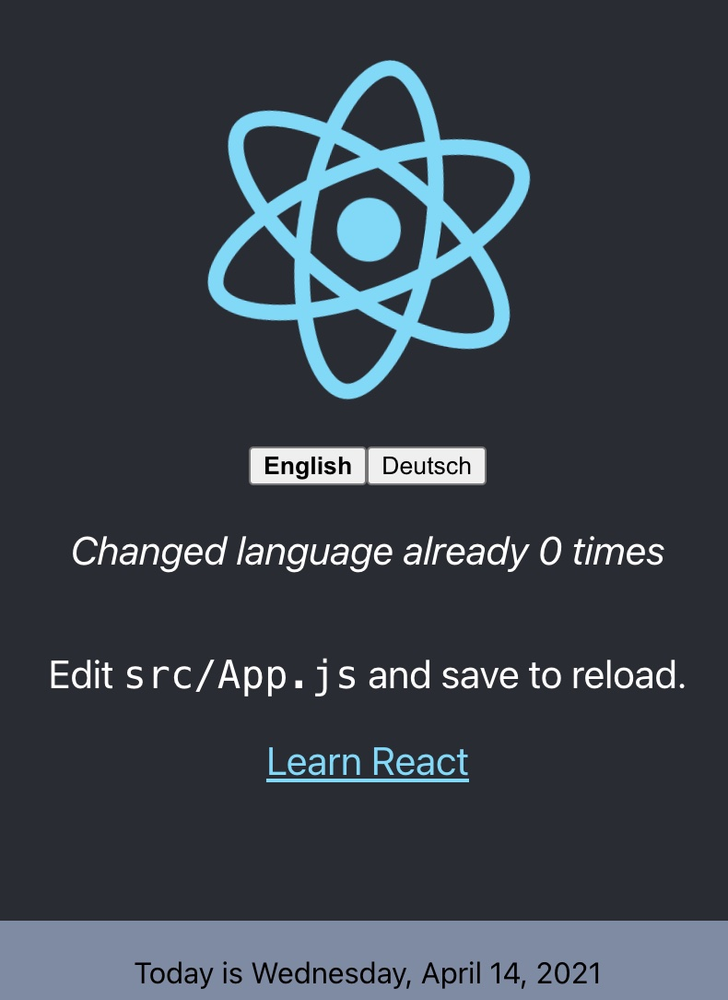

Overcoming the language barrier for users who use your software is an important topic.
English is no longer the universal language of the internet.
As of March 2020, only 25.9% of internet users were English speakers.
The chances are high that your users will skip past your website if non-localized.
Therefore, without a multilingual website you might missing out on a large share of potential users.
In the JavaScript ecosystem, there are a lot of internationalization frameworks. Here you can find some details about some JavaScript internationalization frameworks.
In this article, we will be using the i18next framework to internationalize a React.js app. This step-by-step guide is for you if you're looking for a way to create an internationalized React.js app (with or without Create React App).
Basically, we're going to answer the following question:
Streamline your i18next setup process with this step-by-step guide. Get your localization framework up and running in no time and ensure smooth language transitions for your users. Follow the instructions and avoid any setup complications for your next international project.
So first of all: "Why i18next?"
When it comes to React localization, one of the most popular is i18next with its react extension react-i18next, and for good reasons:
i18next was created in late 2011. It's older than most of the libraries you will use nowadays, including your main frontend technology (React, Angular, Vue, ...). ➡️ sustainable
Based on how long i18next already is available open source, there is no real i18n case that could not be solved with i18next. ➡️ mature
i18next can be used in any javascript (and a few non-javascript - .net, elm, iOS, android, ruby, ...) environment, with any UI framework, with any i18n format, ... the possibilities are endless. ➡️ extensible
There is a plenty of features and possibilities you'll get with i18next compared to other regular i18n frameworks. ➡️ rich
Here you can find more information about why i18next is special and how it works.
Let's get into it (react-i18next)...
Prerequisites
Make sure you have Node.js and npm installed. It's best, if you have some experience with simple HTML, JavaScript and basic React.js, before jumping to react-i18next - the powerful React i18n framework. This react-i18next localization example is not intended to be a React beginner tutorial.
Getting started
Take your own React project or create a new one, i.e. with create-react-app.
npx create-react-app my-app
We are going to adapt the app to detect the language according to the user’s preference.
And we will create a language switcher to make the content change between different languages.
i18n // detect user language // learn more: https://github.com/i18next/i18next-browser-languageDetector .use(LanguageDetector) // pass the i18n instance to react-i18next. .use(initReactI18next) // init i18next // for all options read: https://www.i18next.com/overview/configuration-options .init({ debug: true, fallbackLng: 'en', interpolation: { escapeValue: false, // not needed for react as it escapes by default }, resources: { en: { translation: { // here we will place our translations... } } } });
exportdefault i18n;
Let's import that file somewhere in our index.js file:
i18n // detect user language // learn more: https://github.com/i18next/i18next-browser-languageDetector .use(LanguageDetector) // pass the i18n instance to react-i18next. .use(initReactI18next) // init i18next // for all options read: https://www.i18next.com/overview/configuration-options .init({ debug: true, fallbackLng: 'en', interpolation: { escapeValue: false, // not needed for react as it escapes by default }, resources: { en: { translation: { description: { part1: 'Edit <1>src/App.js</1> and save to reload.', part2: 'Learn React' } } } } });
i18n // detect user language // learn more: https://github.com/i18next/i18next-browser-languageDetector .use(LanguageDetector) // pass the i18n instance to react-i18next. .use(initReactI18next) // init i18next // for all options read: https://www.i18next.com/overview/configuration-options .init({ debug: true, fallbackLng: 'en', interpolation: { escapeValue: false, // not needed for react as it escapes by default }, resources: { en: { translation: { description: { part1: 'Edit <1>src/App.js</1> and save to reload.', part2: 'Learn React' } } }, de: { translation: { description: { part1: 'Ändere <1>src/App.js</1> und speichere um neu zu laden.', part2: 'Lerne React' } } } } });
exportdefault i18n;
ü•≥ Awesome, you've just created your first language switcher!
Thanks to i18next-browser-languagedetector now it tries to detect the browser language and automatically use that language if you've provided the translations for it. The manually selected language in the language switcher is persisted in the localStorage, next time you visit the page, that language is used as preferred language.
How to get the current language?
Since i18next v21 there is i18next.resolvedLanguage.
It is set to the current resolved language and it can be used as primary used language, for example in a language switcher.
If your detected language for example is en-US and you provided translations only for en(fallbackLng) instead i18next.resolvedLanguage will return en.
i18next.language vs. i18next.languages vs. i18next.resolvedLanguage
/* language */ i18next.language; // Is set to the current detected or set language.
/* languages */ i18next.languages; // Is set to an array of language codes that will be used to look up the translation value. // When the language is set, this array is populated with the new language codes. // Unless overridden, this array is populated with less-specific versions of that code for fallback purposes, followed by the list of fallback languages
// initialize with fallback languages i18next.init({ fallbackLng: ["es", "fr", "en-US", "dev"] }); // change the language i18next.changeLanguage("en-US-xx"); // new language and its more generic forms, followed by fallbacks i18next.languages; // ["en-US-xx", "en-US", "en", "es", "fr", "dev"] // change the language again i18next.changeLanguage("de-DE"); // previous language is not retained i18next.languages; // ["de-DE", "de", "es", "fr", "en-US", "dev"]
/* resolvedLanguage */ i18next.resolvedLanguage; // Is set to the current resolved language. // It can be used as primary used language, // for example in a language switcher.
Interpolation and Pluralization
i18next goes beyond just providing the standard i18n features.
But for sure it's able to handle plurals and interpolation.
i18n // detect user language // learn more: https://github.com/i18next/i18next-browser-languageDetector .use(LanguageDetector) // pass the i18n instance to react-i18next. .use(initReactI18next) // init i18next // for all options read: https://www.i18next.com/overview/configuration-options .init({ debug: true, fallbackLng: 'en', interpolation: { escapeValue: false, // not needed for react as it escapes by default }, resources: { en: { translation: { description: { part1: 'Edit <1>src/App.js</1> and save to reload.', part2: 'Learn React' }, counter_one: 'Changed language just once', counter_other: 'Changed language already {{count}} times' } }, de: { translation: { description: { part1: 'Ändere <1>src/App.js</1> und speichere um neu zu laden.', part2: 'Lerne React' }, counter_one: 'Die Sprache wurde erst ein mal gewechselt', counter_other: 'Die Sprache wurde {{count}} mal gewechselt' } } } });
Are you seeing this warning in the development console (debug: true)?
i18next::pluralResolver: Your environment seems not to be Intl API compatible, use an Intl.PluralRules polyfill. Will fallback to the compatibilityJSON v3 format handling.
With v21 i18next streamlined the suffix with the one used in the Intl API.
In environments where the Intl.PluralRules API is not available (like older Android devices), you may need to polyfill the Intl.PluralRules API.
In case it is not available it will fallback to the i18next JSON format v3 plural handling. And if your json is already using the new suffixes, your plural keys will probably not be shown.
tldr;
npm install intl-pluralrules
1
import'intl-pluralrules'
Formatting
Now, let’s check out how we can use different date formats with the help of i18next and Luxon to handle date and time.
npm install luxon
We like to have a footer displaying the current date:
1 2 3 4 5 6 7 8 9 10 11 12
import'./Footer.css';
const Footer = ({ t }) => ( <divclassName="Footer"> <div>{t('footer.date', { date: new Date() })}</div> </div> );
exportdefault Footer;
// imported in our App.js and used like this // <Footer t={t} />
import luxon and define a format function, like documented in the documentation and add the new translation key:
i18n // detect user language // learn more: https://github.com/i18next/i18next-browser-languageDetector .use(LanguageDetector) // pass the i18n instance to react-i18next. .use(initReactI18next) // init i18next // for all options read: https://www.i18next.com/overview/configuration-options .init({ debug: true, fallbackLng: 'en', interpolation: { escapeValue: false, // not needed for react as it escapes by default // format: (value, format, lng) => { // legacy usage // if (value instanceof Date) { // return DateTime.fromJSDate(value).setLocale(lng).toLocaleString(DateTime[format]) // } // return value; // } }, resources: { en: { translation: { description: { part1: 'Edit <1>src/App.js</1> and save to reload.', part2: 'Learn React' }, counter_one: 'Changed language just once', counter_other: 'Changed language already {{count}} times', footer: { date: 'Today is {{date, DATE_HUGE}}' } } }, de: { translation: { description: { part1: 'Ändere <1>src/App.js</1> und speichere um neu zu laden.', part2: 'Lerne React' }, counter_one: 'Die Sprache wurde erst ein mal gewechselt', counter_other: 'Die Sprache wurde {{count}} mal gewechselt', footer: { date: 'Heute ist {{date, DATE_HUGE}}' } } } } });
üòé Cool, now we have a language specific date formatting!
English:

German:
Context
What about a specific greeting message based on the current day time? i.e. morning, evening, etc.
This is possible thanks to the context feature of i18next.
Let's create a getGreetingTime function and use the result as context information for our footer translation:
i18n // i18next-http-backend // loads translations from your server // https://github.com/i18next/i18next-http-backend .use(Backend) // detect user language // learn more: https://github.com/i18next/i18next-browser-languageDetector .use(LanguageDetector) // pass the i18n instance to react-i18next. .use(initReactI18next) // init i18next // for all options read: https://www.i18next.com/overview/configuration-options .init({ debug: true, fallbackLng: 'en', interpolation: { escapeValue: false, // not needed for react as it escapes by default // format: (value, format, lng) => { // legacy usage // if (value instanceof Date) { // return DateTime.fromJSDate(value).setLocale(lng).toLocaleString(DateTime[format]) // } // return value; // } }, resources: { en: { translation: { description: { part1: 'Edit <1>src/App.js</1> and save to reload.', part2: 'Learn React' }, counter_one: 'Changed language just once', counter_other: 'Changed language already {{count}} times', footer: { date: 'Today is {{date, DATE_HUGE}}', date_morning: 'Good morning! Today is {{date, DATE_HUGE}} | Have a nice day!', date_afternoon: 'Good afternoon! It\'s {{date, DATE_HUGE}}', date_evening: 'Good evening! Today was the {{date, DATE_HUGE}}' } } }, de: { translation: { description: { part1: 'Ändere <1>src/App.js</1> und speichere um neu zu laden.', part2: 'Lerne React' }, counter_one: 'Die Sprache wurde erst ein mal gewechselt', counter_other: 'Die Sprache wurde {{count}} mal gewechselt', footer: { date: 'Heute ist {{date, DATE_HUGE}}', date_morning: 'Guten Morgen! Heute ist {{date, DATE_HUGE}} | Wünsche einen schönen Tag!', date_afternoon: 'Guten Tag! Es ist {{date, DATE_HUGE}}', date_evening: 'Guten Abend! Heute war {{date, DATE_HUGE}}' } } } } });
Having the translations in our i18n.js file works, but is not that suitable to work with, for translators.
Let's separate the translations from the code and pleace them in dedicated json files.
Now the translations are loaded asynchronously, so make sure you wrap your app with a Suspense component to prevent this error: Uncaught Error: App suspended while rendering, but no fallback UI was specified.
1 2 3 4 5 6 7 8 9 10 11 12 13 14
import { Suspense } from'react';
functionApp() { // your app's code... }
// here app catches the suspense from page in case translations are not yet loaded exportdefaultfunctionWrappedApp() { return ( <Suspensefallback="...is loading"> <App /> </Suspense> ); }
Now your app looks still the same, but your translations are separated.
If you want to support a new language, you just create a new folder and a new translation json file.
This gives you the possibility to send the translations to some translators.
Or if you're working with a translation management system you can just synchronize the files with a cli.
üßë‚Äçüíª The code of this first part can be found here.
One of the advantages of react-i18next is based on i18next, it supports the separation of translations into multiple files - which are called namespaces in i18next.
In order to use multiple namespaces/translation files, you need to specify it when calling useTranslation:
By sending the translations to some translators or translator agency you have more control and a direct contact with them. But this also means more work for you.
This is a traditional way. But be aware sending files around creates always an overhead.
Does a better option exist?
For sure!
i18next helps to get the application translated, and this is great - but there is more to it.
How do you integrate any translation services / agency?
How do you keep track of new or removed content?
How do you handle proper versioning?
How do you deploy translation changes without deploying your complete application?
const locizeOptions = { projectId: '0bbc223a-9aba-4a90-ab93-ab9d7bf7f780', apiKey: 'aaad4141-54ba-4625-ae37-657538fe29e7', // YOU should not expose your apps API key to production!!! referenceLng: 'en', };
i18n // i18next-locize-backend // loads translations from your project, saves new keys to it (saveMissing: true) // https://github.com/locize/i18next-locize-backend .use(Backend) // detect user language // learn more: https://github.com/i18next/i18next-browser-languageDetector .use(LanguageDetector) // pass the i18n instance to react-i18next. .use(initReactI18next) // init i18next // for all options read: https://www.i18next.com/overview/configuration-options .init({ debug: true, fallbackLng: 'en', interpolation: { escapeValue: false, // not needed for react as it escapes by default // format: (value, format, lng) => { // legacy usage // if (value instanceof Date) { // return DateTime.fromJSDate(value).setLocale(lng).toLocaleString(DateTime[format]) // } // return value; // } }, backend: locizeOptions });
// here app catches the suspense from page in case translations are not yet loaded exportdefaultfunctionWrappedApp() { return ( <Suspensefallback="...is loading"> <App /> </Suspense> ); }
save missing translations
Thanks to the use of the saveMissing functionality, new keys gets added to locize automatically, while developing the app.
Just pass saveMissing: true in the i18next options:
const locizeOptions = { projectId: '0bbc223a-9aba-4a90-ab93-ab9d7bf7f780', apiKey: 'aaad4141-54ba-4625-ae37-657538fe29e7', // YOU should not expose your apps API key to production!!! referenceLng: 'en', };
i18n // i18next-locize-backend // loads translations from your project, saves new keys to it (saveMissing: true) // https://github.com/locize/i18next-locize-backend .use(Backend) // detect user language // learn more: https://github.com/i18next/i18next-browser-languageDetector .use(LanguageDetector) // pass the i18n instance to react-i18next. .use(initReactI18next) // init i18next // for all options read: https://www.i18next.com/overview/configuration-options .init({ debug: true, fallbackLng: 'en', interpolation: { escapeValue: false, // not needed for react as it escapes by default // format: (value, format, lng) => { // legacy usage // if (value instanceof Date) { // return DateTime.fromJSDate(value).setLocale(lng).toLocaleString(DateTime[format]) // } // return value; // } }, backend: locizeOptions, saveMissing: true });
With the help of the locize plugin, you'll be able to use your app within the locize InContext Editor.
Lastly, with the help of the auto-machinetranslation workflow and the use of the saveMissing functionality, new keys not only gets added to locize automatically, while developing the app, but are also automatically translated into the target languages using machine translation.
Check out this video to see how the automatic machine translation workflow looks like!
const locizeOptions = { projectId: '0bbc223a-9aba-4a90-ab93-ab9d7bf7f780', apiKey: 'aaad4141-54ba-4625-ae37-657538fe29e7', // YOU should not expose your apps API key to production!!! referenceLng: 'en', };
i18n // locize-lastused // sets a timestamp of last access on every translation segment on locize // -> safely remove the ones not being touched for weeks/months // https://github.com/locize/locize-lastused .use(LastUsed) // locize-editor // InContext Editor of locize .use(locizePlugin) // i18next-locize-backend // loads translations from your project, saves new keys to it (saveMissing: true) // https://github.com/locize/i18next-locize-backend .use(Backend) // detect user language // learn more: https://github.com/i18next/i18next-browser-languageDetector .use(LanguageDetector) // pass the i18n instance to react-i18next. .use(initReactI18next) // init i18next // for all options read: https://www.i18next.com/overview/configuration-options .init({ debug: true, fallbackLng: 'en', interpolation: { escapeValue: false, // not needed for react as it escapes by default // format: (value, format, lng) => { // legacy usage // if (value instanceof Date) { // return DateTime.fromJSDate(value).setLocale(lng).toLocaleString(DateTime[format]) // } // return value; // } }, backend: locizeOptions, locizeLastUsed: locizeOptions, saveMissing: true });
First in locize, create a dedicated version for production. Do not enable auto publish for that version but publish manually or via API or via CLI.
Lastly, enable Cache-Control max-age​ for that production version.
const locizeOptions = { projectId: process.env.REACT_APP_LOCIZE_PROJECTID, apiKey: process.env.REACT_APP_LOCIZE_APIKEY, // YOU should not expose your apps API key to production!!! referenceLng: process.env.REACT_APP_LOCIZE_REFLNG, version: process.env.REACT_APP_LOCIZE_VERSION };
if (!isProduction) { // locize-lastused // sets a timestamp of last access on every translation segment on locize // -> safely remove the ones not being touched for weeks/months // https://github.com/locize/locize-lastused i18n.use(LastUsed); }
i18n // locize-editor // InContext Editor of locize .use(locizePlugin) // i18next-locize-backend // loads translations from your project, saves new keys to it (saveMissing: true) // https://github.com/locize/i18next-locize-backend .use(Backend) // detect user language // learn more: https://github.com/i18next/i18next-browser-languageDetector .use(LanguageDetector) // pass the i18n instance to react-i18next. .use(initReactI18next) // init i18next // for all options read: https://www.i18next.com/overview/configuration-options .init({ debug: true, fallbackLng: 'en', interpolation: { escapeValue: false, // not needed for react as it escapes by default // format: (value, format, lng) => { // legacy usage // if (value instanceof Date) { // return DateTime.fromJSDate(value).setLocale(lng).toLocaleString(DateTime[format]) // } // return value; // } }, backend: locizeOptions, locizeLastUsed: locizeOptions, saveMissing: !isProduction // you should not use saveMissing in production });